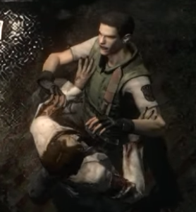
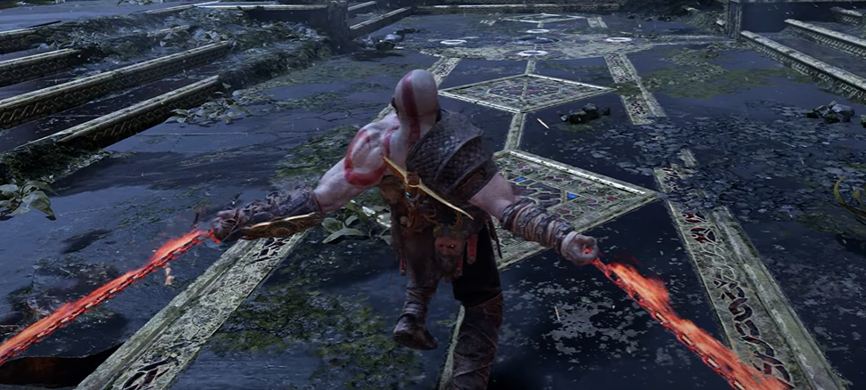
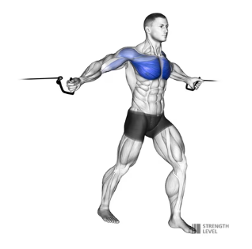

Zombie Press
3 sets of 8-12 reps


- Find a Zombie: Make sure your zombie is relatively lightweight and compliant, not too decayed to fall apart but not too lively to bite.
- Grasp the zombie around its ribcage, securing your hands just under its armpits. Ensure you have a firm grip to prevent slippage.
- Engage your chest, triceps, and shoulders to push the zombie upwards until your arms are fully extended. The zombie should move in a straight line up and down.
- Slowly lower the zombie back to the starting position, maintaining control. Your elbows should come down to about 90 degrees or slightly below, depending on comfort and flexibility.
- Having a spotter (preferably human) can be very helpful to ensure safety.
Chaos Blade flys
3 sets of 10 reps


- Pick up your Blades of Chaos and find a troll, cyclopes, or mythic god
- Stand in the center of the battle field with feet shoulder-width apart.
- lean your body slightly forward, extend your arms out to your sides, slightly bent at the elbows, holding the Chaos Blades at shoulder height. The chains should be taut.
- Swing the Chaos Blades in a powerful arc, slicing through your foe with precision.
"I Am What The Gods Have Made Me!” - (God of War)
"Sure, I’m Not Human Any More, But Just Look At The Power I’ve Gained!” - (Resident Evil - Code: Veronica)